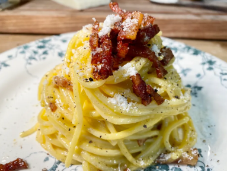

Spaghetti Alla Carbonara

Spaghetti alla Carbonara!
Quick and easy Authentic carbonara recipe from Italy.
Click me to watch the video of the recipe.
Ingredients for 2 portions
- 100gr of Guanciale or Pancetta
- 3 Eggs
- 80gr Pecorino Romano (cheese)
- 1/2 tsp Black pepper
- 1/2 tsp Salt
- 200gr Spaghetti
Steps
- Start by stir frying 50 gr of guanciale per person (no oil!).
- As the guanciale is sizzling, boil the pasta (don’t forget to save about 1 cup of pasta water!).
- Add 1 egg yolk for person and one extra for the pot.
- Grate about 40 gr of pecorino cheese per person.
- Mix the pecorino into the egg yolk to make a smooth cream.
- Add freshly ground peppercorn
- Then add a little bit of fried guanciale and fat into the egg mixture.
- Toss the pasta and cream then mix with passion!
Useful tip:
Be gorgeous while cooking. It makes it taste better.